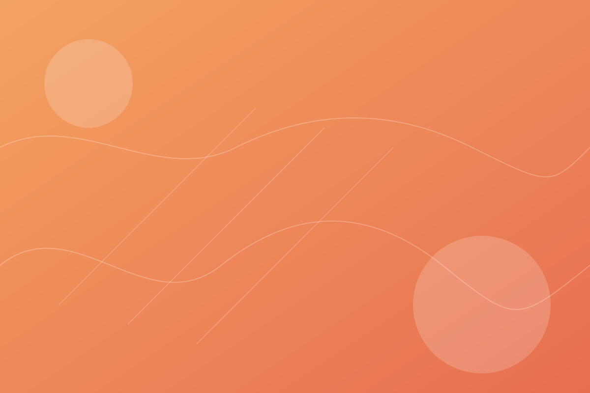

Website Pembelajaran Kalkulus
Ringkasan materi dasar dan latihan soal mengenai kalkulus
Portofolio Pribadi
Mahasiswa yang sedang dalam tahap belajar untuk pengembangan web yang fokus pada antarmuka bersih, aksesibel, dan performa cepat. Tertarik pada desain yang terstruktur dan solusi praktis.

Saya mencoba membangun pengalaman web yang rapi, responsif, dan mudah digunakan. Saya menyukai kolaborasi tim dan dokumentasi yang jelas.
Saya adalah mahasiswa Universitas Siliwangi yang sedang mendalami pengembangan web modern. Fokus utama saya adalah menyusun struktur yang jelas, gaya yang konsisten, dan interaksi yang nyaman bagi pengguna.
Dalam setiap proyek, saya memprioritaskan kejelasan UI, hierarki informasi, serta pengalaman yang cepat di berbagai perangkat.
Mendalami setiap dasar dari pemrogaraman web
Konsisten, tepat waktu, dan berorientasi solusi.
Alat dan kemampuan utama yang saya gunakan sehari-hari.
Contoh karya yang pernah saya buat
Ringkasan materi dasar dan latihan soal mengenai kalkulus
Website kuliner terdekat yang dapat memudahkan orang yang membutuhkan
Portofolio sederhana dengan fokus pada tipografi dan navigasi cepat.
Merupakan seorang mahasiswa Informatika dari Universitas Siliwangi.
Merupakan alumni dari SMA Negeri 2 Tasikmalaya
Merupakan alumni dari SMP negeri 13 Tasikmalaya